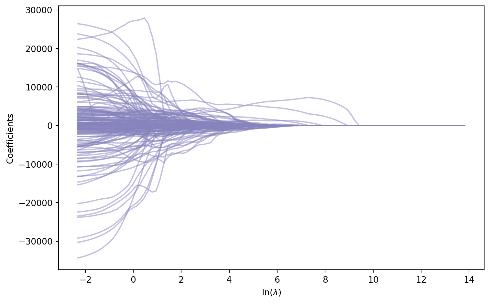
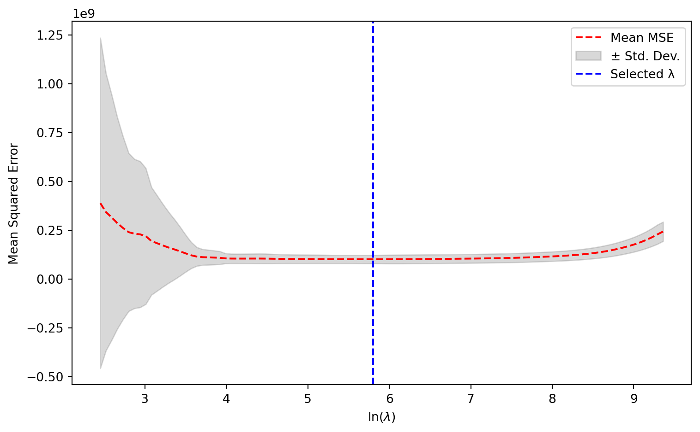
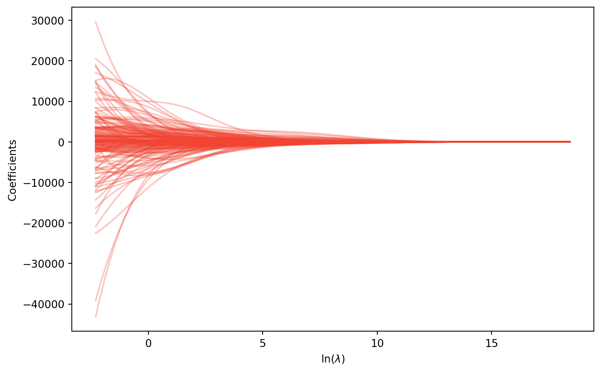
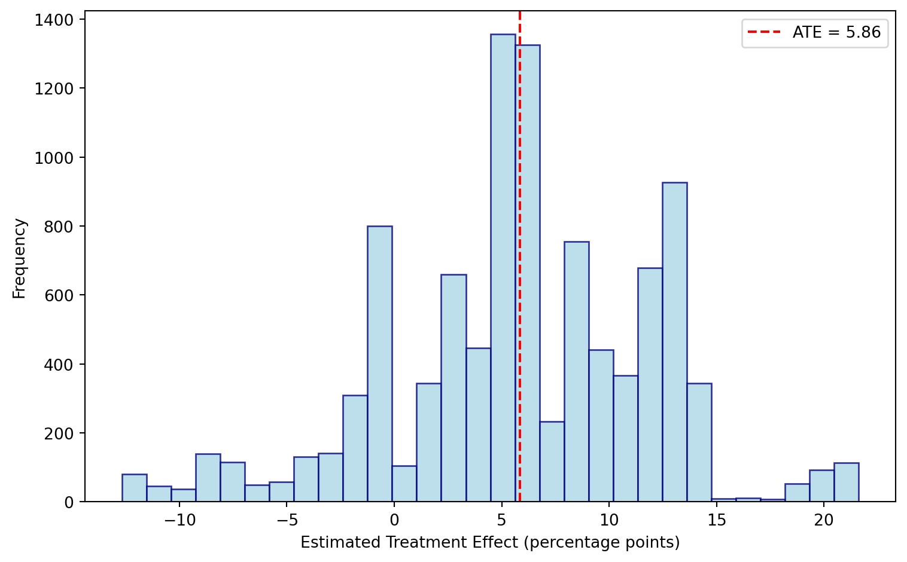
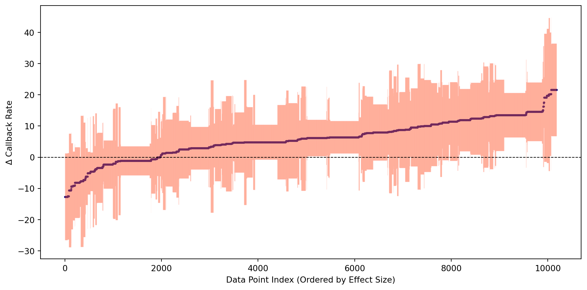
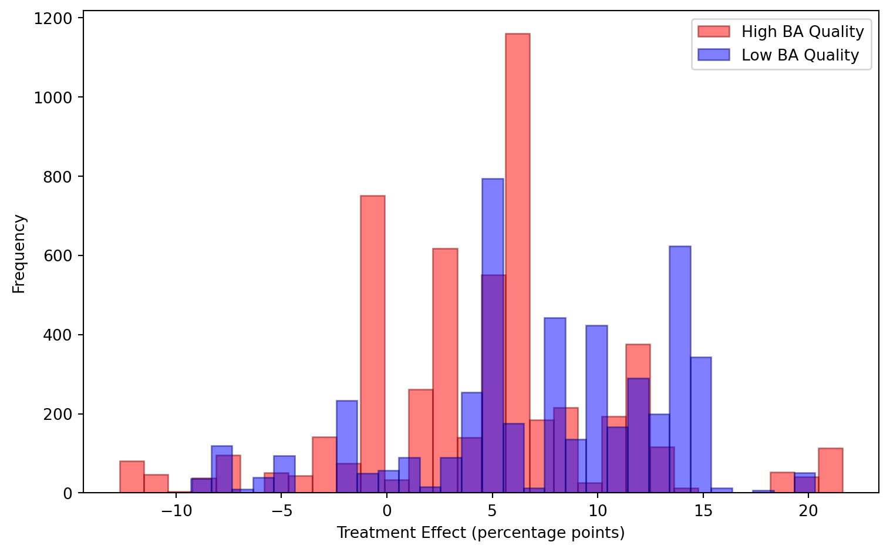
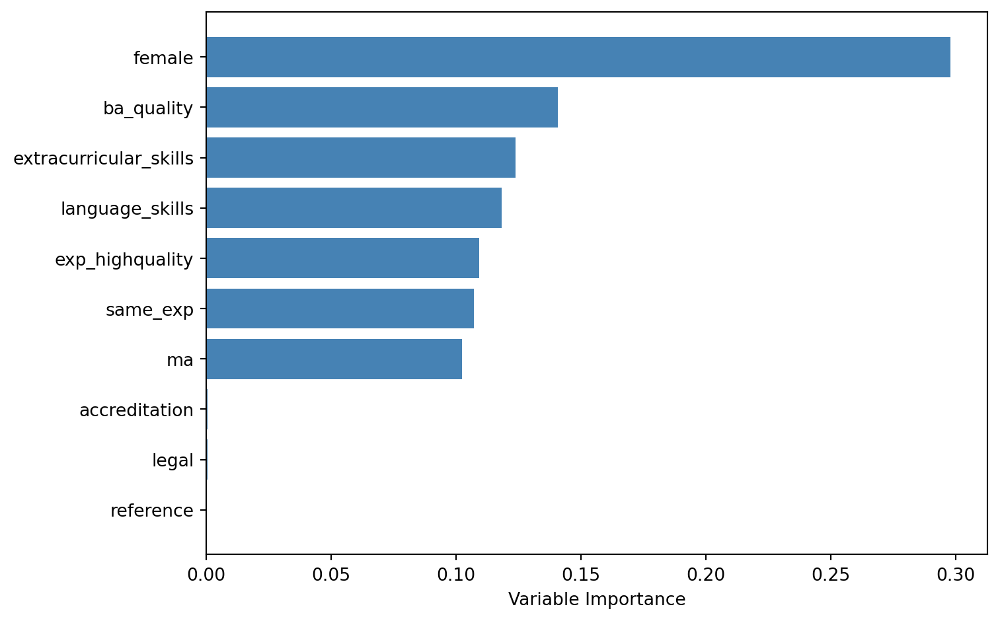
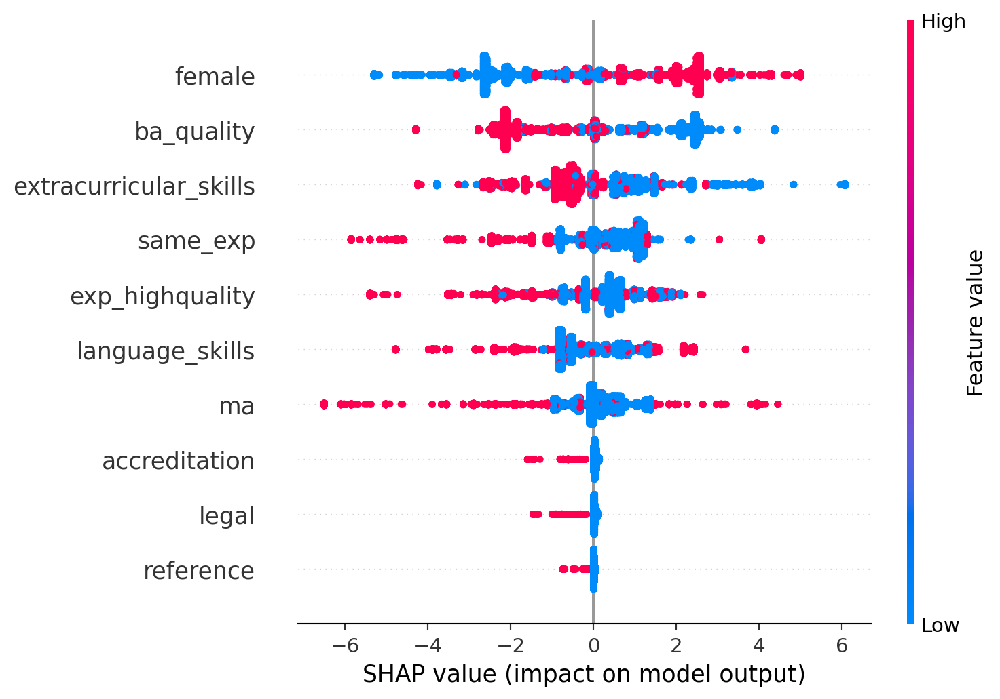

import numpy as np
import pandas as pd
import matplotlib.pyplot as plt
import statsmodels.api as sm
import statsmodels.formula.api as smf
from sklearn.linear_model import Lasso, LassoCV, Ridge, RidgeCV, ElasticNetCV
from sklearn.model_selection import KFold
data = pd.read_csv("data/Farrell_2015.csv")Chapter 9
Code Call-out 9.1: Exploring Penalised Regression Models
In this code call-out we explore regularized regression models using data from Farrell (2015), who revisits the NSW job training setting we encountered in Chapter 3 (see code call-out 3.1). While Farrell (2015)’s primary interest is in inference following model selection, here we focus on the basic workings of model selection and penalised regression models, given their importance for call-outs later in this chapter. The data, originally from LaLonde (1986) and Dehejia and Wahba (1999), consist of the NSW experimental sample (nsw == 1) alongside a non-experimental control group drawn from the PSID (nsw == 0). The outcome of interest is earnings in 1978 (y), the treatment indicator is treat, and the dataset contains 10 baseline demographic covariates (v3-v12), together with interactions of continuous variables (v13-v34), interactions of dummy variables (v35-v48), and polynomials up to order five of the continuous covariates (v49-v173). This rich covariate structure, with 173 potential predictors in total, is designed to allow for very flexible functional forms, which is precisely the setting where regularization is most valuable. We focus here entirely on prediction and model selection; Code Call-out 9.2 turns to the causal estimation problem directly.
Baselines estimates without regularization
Let’s get started by opening these data, loading libraries we will require below, and doing some initial inspection, as well as estimating some baseline (regression) models without regularization.
With the data in memory we can confirm that it looks how we think it should. We can start by confirming that the experimental sub-sample is identical to that in Dehejia and Wahba (1999), Dehejia and Wahba (2002), which we discussed in code call-out 3.1:
# Experimental sample (NSW)
data[data['nsw'] == 1]['treat'].value_counts().reset_index()| treat | count | |
|---|---|---|
| 0 | 0 | 260 |
| 1 | 1 | 185 |
We can see here that, similarly to when we inspected the NSW analysis in Chapter 3, the experimental sample consists of 185 treated units and 260 controls. We can also inspect the layout of the non-experimental sample:
# Observational sample (PSID)
data[data['nsw'] == 0]['treat'].value_counts().reset_index()| treat | count | |
|---|---|---|
| 0 | 0 | 2490 |
| 1 | 1 | 185 |
In this case, there are 2,675 observations, with the treated group simply being replicated from NSW data, and the remaining 2,490 drawn from the PSID. We can also confirm that we re-create experimental estimates from the NSW training program:
nsw = data[data['nsw'] == 1]
model_exp = smf.ols('y ~ treat', data=nsw).fit()
print(model_exp.get_robustcov_results(cov_type='HC1').summary()) OLS Regression Results
==============================================================================
Dep. Variable: y R-squared: 0.018
Model: OLS Adj. R-squared: 0.016
Method: Least Squares F-statistic: 7.155
Date: Mon, 15 Jun 2026 Prob (F-statistic): 0.00775
Time: 01:33:54 Log-Likelihood: -4542.7
No. Observations: 445 AIC: 9089.
Df Residuals: 443 BIC: 9098.
Df Model: 1
Covariance Type: HC1
==============================================================================
coef std err t P>|t| [0.025 0.975]
------------------------------------------------------------------------------
Intercept 4554.8011 340.204 13.388 0.000 3886.187 5223.415
treat 1794.3424 670.824 2.675 0.008 475.949 3112.736
==============================================================================
Omnibus: 282.071 Durbin-Watson: 2.064
Prob(Omnibus): 0.000 Jarque-Bera (JB): 3430.892
Skew: 2.547 Prob(JB): 0.00
Kurtosis: 15.613 Cond. No. 2.47
==============================================================================
Notes:
[1] Standard Errors are heteroscedasticity robust (HC1)This is our experimental benchmark, and as we have seen previously suggests that the job training program increases earnings by an average of $1,794 per year.
From now on, however, we will focus on the non-experimental subsample (i.e., individuals with nsw == 0). In this case, we will seek to determine which covariates are relevant predictors of wages in the post-treatment period from our large set of potential covariates using regularized regression. Before implementing these models, let’s define the variables we will use. Below we store lists of baseline covariates, interaction terms (between continuous and dummy variables respectively), and polynomials of continuous variables.
psid = data[data['nsw'] == 0].copy()
covariates = [f"v{i}" for i in range(3, 13)]
continuous_interactions = [f"v{i}" for i in range(13, 35)]
dummy_interactions = [f"v{i}" for i in range(35, 49)]
polynomials = [f"v{i}" for i in range(49, 174)]
all_vars = covariates + continuous_interactions + dummy_interactions + polynomials
# Prepare matrices for sklearn (requires array input)
X = psid[all_vars].values
y = psid['y'].valuesWe can confirm that the choice of covariates to include is certainly of consequence. If we simply regress the outcome on treatment, we see that the observational sample clearly does not form a good counterfactual. Rather than approximating the experimental effect, we find effects which are both mis-signed and an order of magnitude larger (i.e., an average decrease of $15,205 in annual earnings for treated individuals).
model_naive = smf.ols('y ~ treat', data=psid).fit()
print(model_naive.get_robustcov_results(cov_type='HC1').summary()) OLS Regression Results
==============================================================================
Dep. Variable: y R-squared: 0.061
Model: OLS Adj. R-squared: 0.061
Method: Least Squares F-statistic: 537.4
Date: Mon, 15 Jun 2026 Prob (F-statistic): 1.78e-108
Time: 01:33:54 Log-Likelihood: -29544.
No. Observations: 2675 AIC: 5.909e+04
Df Residuals: 2673 BIC: 5.910e+04
Df Model: 1
Covariance Type: HC1
==============================================================================
coef std err t P>|t| [0.025 0.975]
------------------------------------------------------------------------------
Intercept 2.155e+04 311.785 69.131 0.000 2.09e+04 2.22e+04
treat -1.52e+04 655.914 -23.181 0.000 -1.65e+04 -1.39e+04
==============================================================================
Omnibus: 715.202 Durbin-Watson: 0.926
Prob(Omnibus): 0.000 Jarque-Bera (JB): 2698.177
Skew: 1.278 Prob(JB): 0.00
Kurtosis: 7.205 Cond. No. 3.96
==============================================================================
Notes:
[1] Standard Errors are heteroscedasticity robust (HC1)We can, however, see that simply including all possible covariates in this model also appears to not be an ideal solution. When we do this, as we may expect given that we are in essence likely over-fitting our model, the variance of our estimated treatment effect becomes quite large, not letting us rule out the actual experimental treatment effect we estimated earlier, but also quite a large range of other effects. We do this below (omitting v3, v4, v8 and v9 given perfect colinearity):
exclude = ['v3', 'v4', 'v8', 'v9']
vars_filtered = [v for v in all_vars if v not in exclude]
fml_all = 'y ~ treat + ' + ' + '.join(vars_filtered)
model_all = smf.ols(fml_all, data=psid).fit()
print(model_all.get_robustcov_results(cov_type='HC1').summary()) OLS Regression Results
==============================================================================
Dep. Variable: y R-squared: 0.687
Model: OLS Adj. R-squared: 0.666
Method: Least Squares F-statistic: 2412.
Date: Thu, 04 Jun 2026 Prob (F-statistic): 0.00
Time: 00:29:18 Log-Likelihood: -28073.
No. Observations: 2675 AIC: 5.648e+04
Df Residuals: 2506 BIC: 5.748e+04
Df Model: 168
Covariance Type: HC1
==============================================================================
coef std err t P>|t| [0.025 0.975]
------------------------------------------------------------------------------
Intercept 4.81e+04 8368.776 5.748 0.000 3.17e+04 6.45e+04
treat 83.1633 933.452 0.089 0.929 -1747.252 1913.579
v5 151.6610 3915.343 0.039 0.969 -7525.978 7829.300
v6 -1788.1316 2775.190 -0.644 0.519 -7230.032 3653.769
v7 358.0123 1301.305 0.275 0.783 -2193.732 2909.757
v10 1.661e+04 1.2e+04 1.390 0.165 -6823.385 4e+04
v11 681.6223 3843.224 0.177 0.859 -6854.598 8217.843
v12 -8767.0449 4619.227 -1.898 0.058 -1.78e+04 290.848
v13 1826.1160 1968.663 0.928 0.354 -2034.256 5686.488
v14 305.0890 1845.293 0.165 0.869 -3313.366 3923.544
v15 1230.5777 1004.913 1.225 0.221 -739.968 3201.123
v16 -874.1249 455.549 -1.919 0.055 -1767.417 19.167
(output omitted)
v169 2.248e+05 5.35e+04 4.203 0.000 1.2e+05 3.3e+05
v170 -2.918e+04 9788.163 -2.981 0.003 -4.84e+04 -9986.131
v171 -4.079e+04 1.3e+04 -3.131 0.002 -6.63e+04 -1.52e+04
v172 -1.243e+05 4.6e+04 -2.701 0.007 -2.15e+05 -3.41e+04
v173 3.749e+04 9322.136 4.021 0.000 1.92e+04 5.58e+04
==============================================================================
Omnibus: 671.501 Durbin-Watson: 1.922
Prob(Omnibus): 0.000 Jarque-Bera (JB): 8759.378
Skew: 0.814 Prob(JB): 0.00
Kurtosis: 11.714 Cond. No. 1.01e+04
==============================================================================
Notes:
[1] Standard Errors are heteroscedasticity robust (HC1)
[2] The condition number is large, 1.01e+04. This might indicate that there are
strong multicollinearity or other numerical problems.
Turning to Penalized Regression Models
Let’s begin exploring regularised regression models which should guard against over-fitting, while at the same time including relevant covariates. We will begin by working with the Lasso here (the ‘Least Absolute Shrinkage and Selection Operator’), and below consider some alternative forms of regularized regression models. As we lay out in Chapter 9, this consists of estimating the following: \[ \underset{\beta}{\text{argmin}}\left\{\sum_{i=1}^N(Y_i-X^\prime\beta)^2+\lambda(||\beta||_1)\right\} \tag{1}\] The \(\ell_1\) penalty drives some coefficients to exactly zero, making Lasso a tool for both estimation and variable selection. The strength of regularization is controlled by \(\lambda\): larger values shrink more coefficients to zero, yielding a sparser model.
In general, it is very important to note that the precise implementation of Lasso algorithms differs between languages, with slight differences in the way colinearity is handled, standardisation of variables, convergence tolerance of algorithms, and how intercepts are incorporated. Thus, unless very explicit defaults are set, we will not necessarily observe precise reproducibility across languages. Nevertheless, we should expect broad patterns to be very similar.
Lasso Selection (with an arbitrary penalty)
We can see the way that penalisation in Equation 1 works by incorporating an arbitrary penalisation value for \(\lambda\). To run the Lasso in Python we use the Lasso class from sklearn, including the dependent variable and all the covariates in our model. Note that in sklearn the penalisation parameter is, somewhat confusingly, called alpha rather than lambda. We arbitrarily set it to 10 below:
# Lasso selection with lambda value of 10
lasso_10 = Lasso(alpha=10, max_iter=10000)
lasso_10.fit(X, y)
nonzero_10 = lasso_10.coef_ != 0
print(f"Number of selected covariates: {nonzero_10.sum()}")Number of selected covariates: 121In this case we can see which covariates are retained after the selection process:
selected_10 = np.array(all_vars)[nonzero_10]
for v, c in zip(selected_10, lasso_10.coef_[nonzero_10]):
print(f"{v}: {c:.4f}")v6: -834.0174
v11: -17.5801
v12: -1874.8467
v15: 812.2410
v16: -590.1036
v19: 2445.0280
v20: -1618.5801
v22: 481.9744
v24: 1633.5576
v25: -1966.8571
v26: 40.5859
v27: 818.7994
v28: 54.7383
v30: -321.2047
v31: 2508.4968
v32: -943.7719
v33: 240.7659
v34: 2486.4001
v35: -129.1068
v36: 367.1592
v37: 94.3058
v38: -869.3955
v40: -808.7445
v42: 280.6472
v43: 641.2972
v44: 155.0247
v45: 392.2038
v46: -301.7872
v47: 485.4310
v48: -261.9323
v49: -1070.4859
v51: 493.0031
v52: 121.7706
v53: 43.7923
v54: 288.7720
v55: 149.7244
v56: 1378.2117
v57: -234.8867
v58: -8.8828
v60: -469.7110
v61: 721.1882
v62: -586.9011
v63: 1482.6232
v65: -273.8155
v66: 5.9232
v67: -401.3277
v68: 301.8683
v69: 6529.4715
v70: 76.5247
v71: 3253.3459
v72: 1163.6591
v73: 1191.8197
v75: 167.7058
v76: 1909.5092
v77: -328.8712
v78: -334.5974
v79: -527.9557
v80: 737.1757
v81: 1415.6348
v82: -1311.8324
v83: -478.2754
v86: 3113.1668
v87: 86.8908
v89: -4149.1007
v91: 329.9070
v92: -3086.5483
v93: 7.3445
v95: 747.5832
v96: 1.1673
v97: 2618.1548
v98: -2693.7662
v100: -588.4584
v101: 1230.8259
v102: 958.3676
v103: -1767.0000
v104: 2990.6662
v105: -661.7308
v106: -4871.8672
v107: 789.6323
v108: -1378.3315
v109: 145.5381
v110: -1542.7935
v111: -51.3183
v112: 660.3175
v113: -14.9807
v116: 345.8155
v117: 1098.1342
v118: -238.0001
v120: -16.5782
v121: -2113.6520
v122: -1330.1478
v123: 3951.3599
v124: 92.7478
v125: -4620.7894
v126: 1366.7425
v128: -3539.7993
v129: 1270.5517
v130: 4283.5661
v133: 3309.3874
v135: -1784.0089
v136: -6363.4509
v137: -1018.3298
v138: -3138.3666
v141: -6609.8982
v142: 2836.7669
v144: 1139.4880
v145: 3429.7835
v147: 3236.1525
v148: 2634.8315
v151: -297.9842
v153: 2369.0055
v159: 427.7705
v160: -261.7585
v161: -1904.0833
v162: 115.2673
v163: -433.6583
v164: 1135.2915
v170: 794.5265
v171: -426.1383
v172: 9752.9191
v173: -1226.7665Above we see that when we have imposed a \(\lambda\) of 10, 121 out of 172 covariates are retained in the model. We can also display the coefficients on these covariates, though of course, given the nature of the Lasso, they will be shrunk towards zero. Clearly, this value of 10 does not penalize much, as the majority of considered variables remain in the model. However, if we choose a larger penalty, such as a \(\lambda\) of 1000 below, we should expect fewer covariates to be selected.
# Selecting an arbitrary penalty of 1000
lasso_1000 = Lasso(alpha=1000, max_iter=10000)
lasso_1000.fit(X, y)
nonzero_1000 = lasso_1000.coef_ != 0
print(f"Number of selected covariates: {nonzero_1000.sum()}")
selected_1000 = np.array(all_vars)[nonzero_1000]
for v, c in zip(selected_1000, lasso_1000.coef_[nonzero_1000]):
print(f"{v}: {c:.4f}")Number of selected covariates: 6
v34: 582.0022
v54: 1102.2069
v69: 3710.0528
v104: 6957.4310
v123: 66.9663
v126: 103.1908As we can see, in this case only 6 covariates remain in the model. In general (though not necessarily given distinct variable selection), we will also see that the coefficients on selected variables will be closer to zero than in cases with a smaller shrinkage term.
We can view the entire path of coefficients across distinct values of \(\lambda\) by fitting the model across a grid and plotting the results. Below we plot these values against the logarithm of \(\lambda\). We can see the nature of shrinkage with coefficients both moving towards zero, and exiting the model as \(\lambda\) rises.
grid = np.logspace(-1, 6, 100)
coefs = []
for alpha in grid:
lasso = Lasso(alpha=alpha, max_iter=10000)
lasso.fit(X, y)
coefs.append(lasso.coef_)
coefs = np.array(coefs)
plt.figure(figsize=(8, 5))
for i in range(coefs.shape[1]):
plt.plot(np.log(grid), coefs[:, i], color=plt.cm.Purples(0.6), alpha=0.5)
plt.xlabel(r'$\ln(\lambda)$')
plt.ylabel('Coefficients')
plt.tight_layout()
plt.show()
Choosing \(\lambda\) by Cross-Validation
Rather than selecting \(\lambda\) arbitrarily, typically it will be selected using cross-validation, or some other optimal selection method. By default, 10-fold cross-validation is used, where \(\lambda\) is selected to minimise out-of-sample prediction error across 10 sub-samples of data (in code call-out 9.2 below we see such cross-validation implemented “by hand”). Below we do this, again visualising coefficients. In this case, given that folds of data are randomly selected, we set a seed for replicability across runs.
kf = KFold(n_splits=10, shuffle=True, random_state=1213)
cv_lasso = LassoCV(cv=kf, max_iter=10000, random_state=1213)
cv_lasso.fit(X, y)
print(f"Selected lambda: {cv_lasso.alpha_:.4f}")
nonzero_cv = cv_lasso.coef_ != 0
selected_cv = np.array(all_vars)[nonzero_cv]
print(f"Number of selected covariates: {nonzero_cv.sum()}")
for v, c in zip(selected_cv, cv_lasso.coef_[nonzero_cv]):
print(f"{v}: {c:.4f}")Selected lambda: 330.8997
Number of selected covariates: 20
v22: 139.4584
v28: 93.0224
v34: 1518.2852
v40: -171.1649
v49: -460.6610
v54: 1268.5601
v59: 0.9206
v69: 4710.0745
v73: 56.9132
v84: -477.4153
v95: -11.1347
v104: 6328.2529
v118: -48.0796
v126: 287.6504
v137: -187.9628
v141: -9.1856
v148: 36.0234
v161: 358.8603
v163: -395.4338
v167: -410.4388Cross-validation in this case selects a \(\lambda\approx 330\) retaining 20 covariates. We can visualise how the mean squared error evolves as the penalty varies:
alphas = cv_lasso.alphas_
mean_mse = cv_lasso.mse_path_.mean(axis=1)
std_mse = cv_lasso.mse_path_.std(axis=1)
plt.figure(figsize=(8, 5))
plt.plot(np.log(alphas), mean_mse, color='red', linestyle='--', label='Mean MSE')
plt.fill_between(np.log(alphas), mean_mse - std_mse, mean_mse + std_mse,
color='grey', alpha=0.3, label='± Std. Dev.')
plt.axvline(np.log(cv_lasso.alpha_), color='blue', linestyle='--', label='Selected λ')
plt.xlabel(r'$\ln(\lambda)$')
plt.ylabel('Mean Squared Error')
plt.legend()
plt.tight_layout()
plt.show()
Post-Lasso Estimation
Having selected covariates via cross-validation, we can refit the model using OLS with the selected controls. This is referred to as Post-Lasso, and it can be used to remove the shrinkage bias introduced by penalisation in the Lasso. If we return to the context of relevance here, namely considering variables which may be relevant to include as controls in our observational subsample, we can similarly introduce the selected variables along with our treatment variable of interest. It is worth noting that while we will do this here—to understand some of the workings of the Lasso in Python—this is not a valid way to conduct causal inference with variable selection. While Post-Lasso will remove the shrinkage bias in the estimated coefficients, it does not guard against omitted variable bias if relevant confounders are correlated with treatment but not selected by the outcome Lasso. Post-Double Lasso (Alexandre Belloni, Chernozhukov, and Hansen (2013)), along with other procedures we discuss throughout Chapter 9 of the book, addresses this by running a second Lasso of treatment on all controls, and taking the union of both selected sets before the final OLS step. This is the approach we use directly in Code Call-out 9.2 below.
Nevertheless, if we wish to see how to introduce the selected variables into a post-Lasso procedure, we can do this by extracting the names of the selected variables and passing them to a standard OLS regression:
fml_postlasso = 'y ~ treat + ' + ' + '.join(selected_cv)
model_postlasso = smf.ols(fml_postlasso, data=psid).fit()
print(model_postlasso.get_robustcov_results(cov_type='HC1').summary()) OLS Regression Results
==============================================================================
Dep. Variable: y R-squared: 0.612
Model: OLS Adj. R-squared: 0.609
Method: Least Squares F-statistic: 188.5
Date: Mon, 15 Jun 2026 Prob (F-statistic): 0.00
Time: 01:35:24 Log-Likelihood: -28360.
No. Observations: 2675 AIC: 5.676e+04
Df Residuals: 2653 BIC: 5.689e+04
Df Model: 21
Covariance Type: HC1
==============================================================================
coef std err t P>|t| [0.025 0.975]
------------------------------------------------------------------------------
Intercept 2.008e+04 216.623 92.705 0.000 1.97e+04 2.05e+04
treat 1041.5921 831.959 1.252 0.211 -589.761 2672.945
v22 332.3958 229.402 1.449 0.147 -117.429 782.220
v28 220.6529 313.990 0.703 0.482 -395.037 836.343
v34 2106.1194 484.590 4.346 0.000 1155.908 3056.331
v40 -536.1020 237.378 -2.258 0.024 -1001.567 -70.637
v49 -1015.0582 199.987 -5.076 0.000 -1407.205 -622.911
v54 1157.7834 264.936 4.370 0.000 638.281 1677.286
v59 580.5271 290.577 1.998 0.046 10.746 1150.308
v69 5197.5520 768.651 6.762 0.000 3690.336 6704.768
v73 411.0447 261.122 1.574 0.116 -100.979 923.069
v84 -1247.4941 447.701 -2.786 0.005 -2125.373 -369.615
v95 -186.6145 432.935 -0.431 0.666 -1035.539 662.310
v104 5983.2154 817.048 7.323 0.000 4381.100 7585.331
v118 -574.1421 279.159 -2.057 0.040 -1121.534 -26.750
v126 427.6633 783.963 0.546 0.585 -1109.578 1964.904
v137 -320.3715 441.080 -0.726 0.468 -1185.268 544.525
v141 -1144.7141 448.722 -2.551 0.011 -2024.595 -264.833
v148 477.3134 259.128 1.842 0.066 -30.800 985.427
v161 -391.4422 455.989 -0.858 0.391 -1285.572 502.687
v163 -553.7610 276.727 -2.001 0.045 -1096.383 -11.139
v167 -748.7878 847.575 -0.883 0.377 -2410.762 913.186
==============================================================================
Omnibus: 847.674 Durbin-Watson: 1.915
Prob(Omnibus): 0.000 Jarque-Bera (JB): 16026.542
Skew: 1.014 Prob(JB): 0.00
Kurtosis: 14.819 Cond. No. 9.01
==============================================================================
Notes:
[1] Standard Errors are heteroscedasticity robust (HC1)With the selected covariates the estimated treatment effect is around $1,040. Interestingly, this is considerably closer to the experimental benchmark of $1,794 than the naive observational estimate, and broadly consistent with the propensity score matching estimates of Dehejia and Wahba (1999) and Dehejia and Wahba (2002), who find effects ranging from $1,473 to $1,691. As in their case, the estimate is not statistically significant.
Sensitivity to Tuning Choices
One concern with cross-validation-based Lasso is that results can vary with the random seed used to assign observations to folds. We can illustrate this by changing the seed:
kf2 = KFold(n_splits=10, shuffle=True, random_state=121316)
cv_lasso2 = LassoCV(cv=kf2, max_iter=10000, random_state=121316)
cv_lasso2.fit(X, y)
nonzero_cv2 = cv_lasso2.coef_ != 0
print(f"Selected lambda: {cv_lasso2.alpha_:.4f}")
print(f"Number of selected covariates: {nonzero_cv2.sum()}")Selected lambda: 250.3135
Number of selected covariates: 31With seed 121316, cross-validation selects considerably more covariates than with seed 12131627, implying any procedures relying on variable selection will change. An alternative that avoids this seed-dependence is the plug-in estimator of A. Belloni et al. (2012), which derives \(\lambda\) analytically from the data rather than by minimising a cross-validated objective. While sklearn does not implement this directly (and at the time of writing there appears to be no simple implementation of this available in Python), we can access it via R’s hdm package through rpy2. This will require that both R is installed, and that the hdm library is installed in R. Provided that is the case, we can call this as follows (where we must ensure that we pass data correctly to R):
import rpy2.robjects as ro
from rpy2.robjects import numpy2ri
ro.r('library(hdm)')
# Convert X to R matrix via numpy2ri
with ro.conversion.localconverter(ro.default_converter + numpy2ri.converter):
ro.globalenv['X_r'] = ro.conversion.py2rpy(X.astype(float))
ro.globalenv['y_r'] = ro.conversion.py2rpy(y.astype(float))
res_plugin = ro.r('rlasso(X_r, y_r, post=FALSE)')
coef_plugin = np.array(res_plugin.rx2('coefficients'))[1:]
nonzero_plugin = coef_plugin != 0
selected_plugin = np.array(all_vars)[nonzero_plugin]
print(f"Number of selected covariates (plug-in): {nonzero_plugin.sum()}")Number of selected covariates (plug-in): 18The plug-in method selects fewer covariates and does so deterministically. The trade-off is that it prioritises asymptotically valid inference over predictive accuracy, and can under-select in finite samples. We can compare the selected sets across all three specifications:
selected_cv2 = np.array(all_vars)[nonzero_cv2]
all_selected = sorted(set(selected_cv) | set(selected_cv2) | set(selected_plugin))
comparison = pd.DataFrame({
'Variable': all_selected,
'CV_seed1': [int(v in selected_cv) for v in all_selected],
'CV_seed2': [int(v in selected_cv2) for v in all_selected],
'Plugin': [int(v in selected_plugin) for v in all_selected]
})
print(comparison.to_string(index=False))Variable CV_seed1 CV_seed2 Plugin
v101 0 1 0
v104 1 1 1
v118 1 1 0
v126 1 1 1
v137 1 1 1
v141 1 1 0
v147 0 1 0
v148 1 1 0
v161 1 1 1
v163 1 1 1
v167 1 1 1
v173 0 1 0
v19 0 0 1
v22 1 1 0
v28 1 1 0
v3 0 0 1
v31 0 1 0
v34 1 1 1
v4 0 0 1
v40 1 1 1
v47 0 1 0
v48 0 0 1
v49 1 1 1
v50 0 1 1
v54 1 1 0
v58 0 1 0
v59 1 1 1
v67 0 1 0
v69 1 1 1
v70 0 1 0
v73 1 1 0
v75 0 1 0
v8 0 0 1
v84 1 1 0
v9 0 0 1
v95 1 1 0
v96 0 1 0The variation across columns illustrates that the covariates retained, and hence the results which rely on variable selection, can be sensitive to the choice of penalisation method and tuning parameters. This is not a reason to abandon regularized regression, but it does argue for transparency about these choices and points to a benefit of the theoretically grounded plug-in penalty which we examine again in code call-out 9.2.
Ridge & Elastic Net
While Lasso is a leading variable selection method, there are a range of other penalised models we may encounter in our work, and we discuss a couple of these (Ridge regression and the Elastic net), and some key differences, here.
Ridge Regression
Lasso’s \(\ell_1\) penalty drives coefficients to exactly zero, making it useful for variable selection. Ridge regression replaces this with an \(\ell_2\) penalty:
\[ \underset{\beta}{\text{argmin}}\left\{\sum_{i=1}^N(Y_i-X_i^\prime\beta)^2 +\lambda\sum_{j=1}^p\beta_j^2\right\}. \tag{2}\]
This change implies that Ridge Regression penalizes high coefficient values by introducing a penalty that shrinks them towards zero, but never sets them exactly to zero. As a result, this regularization method is not suitable for model selection but is useful in high-dimensional models where overfitting is a concern, also in cases where the number of covariates exceeds the sample size.
To perform Ridge regression, we use RidgeCV from sklearn with alpha=0 equivalent achieved by using a very small l1_ratio. As with Lasso regression, we include a seed to ensure reproducibility:
kf = KFold(n_splits=10, shuffle=True, random_state=1234)
grid = np.logspace(-1, 8, 100)
cv_ridge = RidgeCV(alphas=grid, cv=kf)
cv_ridge.fit(X, y)
print(f"Selected lambda: {cv_ridge.alpha_:.4f}")
print(f"Number of nonzero coefficients: {(cv_ridge.coef_ != 0).sum()}")Selected lambda: 1000.0000
Number of nonzero coefficients: 171Unlike Lasso, all coefficients remain non-zero throughout. Ridge shrinks coefficients but never selects variables. If we again examine the coefficient path here we will see quite distinct behaviour to the Lasso. In this case, coefficients shrink gradually towards zero, never hitting zero.
grid_plot = np.logspace(-1, 8, 100)
coefs_ridge = []
for alpha in grid_plot:
ridge = Ridge(alpha=alpha)
ridge.fit(X, y)
coefs_ridge.append(ridge.coef_)
coefs_ridge = np.array(coefs_ridge)
plt.figure(figsize=(8, 5))
for i in range(coefs_ridge.shape[1]):
plt.plot(np.log(grid_plot), coefs_ridge[:, i], color=plt.cm.Reds(0.6), alpha=0.3)
plt.xlabel(r'$\ln(\lambda)$')
plt.ylabel('Coefficients')
plt.tight_layout()
plt.show()
Indeed, more generally what the elastic net (Zou and Hastie (2005)) allows is for an interpolation between the Ridge and the Lasso’s penalisation behaviour via a mixing parameter \(\alpha \in [0,1]\):
\[ \underset{\beta}{\text{argmin}}\left\{\sum_{i=1}^N(Y_i-X_i^\prime\beta)^2 +\lambda\sum_{j=1}^p\left(\alpha|\beta_j|+(1-\alpha)\beta_j^2\right)\right\} \tag{3}\]
When \(\alpha=1\) this is the Lasso, whereas when \(\alpha=0\) it converges on the Ridge. In cases where one wishes to implement an elastic net, we can select the optimal \(\lambda\) for each value of \(\alpha\) by cross-validation, and then compare across values of \(\alpha\) to find the best combination. Here we consider four values of \(\alpha\):
kf = KFold(n_splits=10, shuffle=True, random_state=12131627)
alphas_en = [1, 0.75, 0.5, 0]
from sklearn.model_selection import cross_val_score
results_en = []
for a in alphas_en:
if a == 0:
cv_fit = RidgeCV(alphas=np.logspace(-1, 8, 100), cv=kf)
cv_fit.fit(X, y)
lam = cv_fit.alpha_
nonzero = (cv_fit.coef_ != 0).sum()
# Compute MSE using the selected lambda
from sklearn.linear_model import Ridge
ridge_best = Ridge(alpha=lam)
mse_scores = -cross_val_score(ridge_best, X, y, cv=kf,
scoring='neg_mean_squared_error')
min_mse = mse_scores.mean()
else:
cv_fit = ElasticNetCV(l1_ratio=a, cv=kf, max_iter=10000,
random_state=12131627)
cv_fit.fit(X, y)
lam = cv_fit.alpha_
nonzero = (cv_fit.coef_ != 0).sum()
min_mse = cv_fit.mse_path_.mean(axis=1).min()
results_en.append({'alpha': a, 'lambda': lam,
'min_mse': min_mse, 'nonzero': nonzero})
comparison_fit = pd.DataFrame(results_en)
print(comparison_fit) alpha lambda min_mse nonzero
0 1.00 62.004568 1.002911e+08 78
1 0.75 15.491365 1.252834e+08 170
2 0.50 23.237048 1.554675e+08 169
3 0.00 1232.846739 1.046938e+08 171The results illustrate which combination of \(\alpha\) and \(\lambda\) yields the lowest minimum cross-validated MSE. Across these specifications, Lasso (\(\alpha=1\)) typically achieves the best out-of-sample MSE in this setting, consistent with a preference for a sparse model. Thus, while conceptually all three methods guard against overfitting relative to unrestricted OLS, they offer very distinct choices in practice, with Lasso acting to select variables, Ridge simply shrinking coefficients, and Elastic Net offering (potentially) a middle ground. In the context of causal estimation, however, none of these methods alone delivers valid inference on the treatment effect, even under quite strong assumptions of conditional unconfoundedness. For that, we turn to the doubly-robust methods in the next code call-out.
Code Call-out 9.2: Double-Debiased Machine Learning
Introduction
We will explore double-debiased machine learning and post-double selection methods using an example from Donohue and Levitt (2001), which has been discussed in Alexandre Belloni, Chernozhukov, and Hansen (2013). This examines the impact of abortion legalisation in the United States in the 1970s on crime rates many years later when birth cohorts exposed to abortion reform reached early adulthood. The much-analysed hypothesis first proposed by Donohue and Levitt (2001) is that crime rates decline as a result of declines in cohort sizes and changes in cohort composition given declining rates of unplanned births. However, this finding has been questioned, and one specific question is about the precise set of controls included in specifications of Donohue and Levitt (2001). In this code call-out, we will examine the use of both post double-selection (Alexandre Belloni, Chernozhukov, and Hansen (2013)) and double-debiased ML (Chernozhukov et al. (2018)) to see how they differ, and their estimated effects in this particular setting.
To begin, we load the state-level panel data used by Alexandre Belloni, Chernozhukov, and Hansen (2014), which mirrors Donohue and Levitt’s 1985-1997 dataset (50 states \(\times\) 13 years):
import numpy as np
import pandas as pd
import statsmodels.api as sm
from sklearn.linear_model import LassoCV
from sklearn.model_selection import KFold
from doubleml import DoubleMLData, DoubleMLPLR
data = pd.read_stata("data/Belloni_et_al_2014.dta")
data = data[(data['year'] >= 85) & (data['year'] <= 97) & (data['statenum'] != 9)].copy()
data = data.sort_values(['statenum', 'year']).reset_index(drop=True)With data loaded, we can confirm the key outcome variables we will use below:
data[[c for c in data.columns if c.startswith('lpc')]].describe()| lpc_viol | lpc_prop | lpc_murd | |
|---|---|---|---|
| count | 650.000000 | 650.000000 | 650.000000 |
| mean | 1.457824 | 3.772907 | -2.876349 |
| std | 0.628335 | 0.253613 | 0.646105 |
| min | -0.743120 | 3.042855 | -6.458338 |
| 25% | 1.067432 | 3.643969 | -3.317032 |
| 50% | 1.579442 | 3.775098 | -2.789665 |
| 75% | 1.919406 | 3.950646 | -2.351930 |
| max | 2.516008 | 4.365010 | -1.592126 |
As laid out in Alexandre Belloni, Chernozhukov, and Hansen (2014), the specification of interest they seek to estimate is: \[ crime_{cit} = \tau_c \, abortion_{cit} + w^\prime_{it}\beta_c + \delta_{ci} + \gamma_{ct} + \varepsilon_{cit}, \] where \(c\) indexes different crime types (violent crime, property crime and murder), \(i\) refers to states, and \(t\) refers to time. The interest is in identifying \(\tau_c\) which describes the impact of abortion rates years earlier on crime rates among cohorts in adulthood. Here, \(abortion_{cit}\) is coded as in Donohue and Levitt (2001) to refer to the abortion rate among cohorts most likely to commit crime type \(c\). A set of controls is included as \(w_{it}\) (state and time-varying controls), \(\delta_{ci}\) (state-specific effects) and \(\gamma_{ct}\) (time-specific effects). Alexandre Belloni, Chernozhukov, and Hansen (2014) take first differences which avoids the need for state-level fixed effects, and year fixed effects will be consistently included. The question we will examine here is precisely which set of time-varying controls to include among a large set of potential confounders.
With data loaded, we can construct the first-difference variables for crime and abortion rates, and define our large set of candidate controls, which follows Alexandre Belloni, Chernozhukov, and Hansen (2014) (and Donohue and Levitt (2001)) to include as controls the log of lagged prisoners per capita, the log of lagged police per capita, the unemployment rate, per‐capita income, the poverty rate, the generosity of AFDC at \(t-15\), a concealed‐weapons law dummy, and beer consumption per capita contemporaneous state support programs. Importantly, while this is a reasonably small number of time-varying controls (8 time varying controls, beginning with xx in data), as the functional form is not known, a very rich set-up is considered including these variables in levels, in differences, their quadractic, their cross products, the quadratic of cross-products, interactions with time-trends, and so forth. Below we generate the full set of controls, essentially following Alexandre Belloni, Chernozhukov, and Hansen (2014), though as this is somewhat long, we keep this unexposed, please click on the code to see the full generating process1.
data['trend'] = (data['year'] - 85) / 12
data['xxincome'] = data['xxincome'] / 100
data['xxpover'] = data['xxpover'] / 100
data['xxafdc15'] = data['xxafdc15'] / 10000
data['xxbeer'] = data['xxbeer'] / 100
xx_vars = ['xxprison','xxpolice','xxunemp','xxincome','xxpover','xxafdc15','xxgunlaw','xxbeer']
new_cols = {}
for x in xx_vars:
grp = data.groupby('statenum')[x]
new_cols[f'D{x}'] = grp.diff()
new_cols[f'D{x}2'] = grp.diff()**2
new_cols[f'L{x}'] = grp.shift(1)
new_cols[f'L{x}2'] = grp.shift(1)**2
new_cols[f'M{x}'] = grp.transform('mean')
new_cols[f'M{x}2'] = grp.transform('mean')**2
new_cols[f'{x}0'] = grp.transform('first')
new_cols[f'{x}02'] = grp.transform('first')**2
data = pd.concat([data, pd.DataFrame(new_cols, index=data.index)], axis=1)
# Difference interactions
Dxx = [f'D{x}' for x in xx_vars]
DxxInt = []
for ii, c1 in enumerate(Dxx):
for c2 in Dxx[:ii]:
nm = f'{c1}X{c2}'
data[nm] = data[c1] * data[c2]
DxxInt.append(nm)
# Initial differences and squared
for x in xx_vars:
data[f'D{x}0'] = data.groupby('statenum')[f'D{x}'].transform(
lambda s: s.iloc[1] if len(s) > 1 else np.nan)
data[f'D{x}02'] = data[f'D{x}0']**2
Dxx0 = [f'D{x}0' for x in xx_vars]
Dxx02 = [f'D{x}02' for x in xx_vars]
Lxx = [f'L{x}' for x in xx_vars]
Lxx2 = [f'L{x}2' for x in xx_vars]
Mxx = [f'M{x}' for x in xx_vars]
Mxx2 = [f'M{x}2' for x in xx_vars]
xx0 = [f'{x}0' for x in xx_vars]
xx02 = [f'{x}02' for x in xx_vars]
Dxx2 = [f'D{x}2' for x in xx_vars]
# Trend interactions for all inputs
biglist = Dxx + Dxx2 + DxxInt + Lxx + Lxx2 + Mxx + Mxx2 + xx0 + xx02 + Dxx0 + Dxx02
IntT = []
for col in biglist:
data[f'{col}Xt'] = data[col] * data['trend']
data[f'{col}Xt2'] = data[col] * data['trend']**2
IntT += [f'{col}Xt', f'{col}Xt2']
shared = biglist + IntT
# Crime-specific controls and outcome/treatment first differences
AllControls = {}
for name in ['viol','prop','murd']:
src = f'efa{name}'
lpc = f'lpc_{name}'
data[f'D{name}'] = data.groupby('statenum')[src].diff()
data[f'Dy{name}'] = data.groupby('statenum')[lpc].diff()
data[f'{name}0'] = data.groupby('statenum')[src].transform('first')
data[f'D{name}0'] = data.groupby('statenum')[f'D{name}'].transform(
lambda s: s.iloc[1] if len(s) > 1 else np.nan)
data[f'{name}02'] = data[f'{name}0']**2
data[f'D{name}02'] = data[f'D{name}0']**2
# Trend interactions for crime-specific initial levels
for base, sq in [(f'{name}0', f'{name}02'),
(f'D{name}0', f'D{name}02')]:
data[f'{base}Xt'] = data[base] * data['trend']
data[f'{base}Xt2'] = data[base] * data['trend']**2
data[f'{sq}Xt'] = data[sq] * data['trend']
data[f'{sq}Xt2'] = data[sq] * data['trend']**2
crime_vars = [
f'{name}0', f'{name}0Xt', f'{name}0Xt2',
f'{name}02', f'{name}02Xt', f'{name}02Xt2',
f'D{name}0', f'D{name}0Xt', f'D{name}0Xt2',
f'D{name}02', f'D{name}02Xt', f'D{name}02Xt2'
]
AllControls[name] = crime_vars + shared
AllViol = AllControls['viol']
AllProp = AllControls['prop']
AllMurd = AllControls['murd']
# Year dummies
data = pd.get_dummies(data, columns=['year'], prefix='yr', drop_first=True)
year_cols = [c for c in data.columns if c.startswith('yr_')]
# Drop rows with missing key variables
data = data.dropna(subset=['Dyviol','Dviol','Dyprop','Dprop','Dymurd','Dmurd']
).reset_index(drop=True)
def get_controls_mat(df, allvars):
cols = [c for c in allvars if c in df.columns]
return df[cols].astype(float).values
# Helper for OLS with clustered SE
def ols_clustered(y, X, clusters):
model = sm.OLS(y, sm.add_constant(X)).fit(
cov_type='cluster', cov_kwds={'groups': clusters})
return modelWhat is key above is that we have defined three lists which contain the full set of potential covariates: Allviol, Allprop and Allmurd, corresponding to three crime types. With these sets of variables in hand, we will consider below which of these (many) controls may be appropriate for our models using post-double selection LASSO and Double-debiased machine learning.
We can see below that the implications of such a decision are considerable. If we first estimate the specification focusing on violent crimes and using no covariates, we estimate that Donohue and Levitt (2001)’s measure of abortion suggests that exposure to reform reduces crime rates by a statistically significant 15.7 percent. However, in cases where all potential covariates are included, we see that estimates become very noisy, with a point estimate of a positive 79 percent, but a standard error much larger in magnitude.
statenum = data['statenum'].values
yv = data['Dyviol'].values
Dv = data['Dviol'].values
# (a) No controls, year dummies only
Xa = np.column_stack([Dv, data[year_cols].values])
m_a = ols_clustered(yv, Xa, statenum)
print(f"No controls - coef: {m_a.params[1]:.4f} SE: {m_a.bse[1]:.4f}")
# (b) All controls
Xyd = get_controls_mat(data, AllViol)
Xb = np.column_stack([Dv, Xyd])
m_b = ols_clustered(yv, Xb, statenum)
print(f"All controls - coef: {m_b.params[1]:.4f} SE: {m_b.bse[1]:.4f}")No controls - coef: -0.1572 SE: 0.0326
All controls - coef: 0.7952 SE: 0.6931Given this quite substantial difference between a case of including no controls (potentially missing many relevant confounding factors), and including all controls (potentially including many irrelevant controls which nevertheless increase the variance of estimates), we will explore two methods below which provide guidance on how to select these controls: post double-selection, and double-debiased machine learning.
Post Double Selection Lasso
As we lay out at more length in Section 9.3.1 of the book, the “double selection” procedure works as follows. First, we estimate a Lasso to pick the controls that best predict the outcome. Second, we repeat the Lasso, this time selecting the covariates that best predict the treatment variable. Third, we take the union of those two sets of controls. Finally, we estimate the treatment effect by regressing the outcome on the treatment and all controls in that combined set. We implement this below, where we first residualise both outcome and treatment by year fixed effects before applying the Lasso. We do this residualisation given that we want to force these variables to remain in the Lasso, however such implementations are not available in Python at the time of writing. By residualising these from both outcomes and treatment variables, a similar effect is achieved.
np.random.seed(123)
kf = KFold(n_splits=10, shuffle=True, random_state=123)
Xyd = get_controls_mat(data, AllViol)
# Residualise by year FE
Xyr = data[year_cols].astype(float).values
r_y = yv - sm.OLS(yv, sm.add_constant(Xyr)).fit().predict()
r_d = Dv - sm.OLS(Dv, sm.add_constant(Xyr)).fit().predict()
# Step 1: Lasso for outcome
cv_y = LassoCV(cv=kf, max_iter=10000, random_state=123)
cv_y.fit(Xyd, r_y)
sel_y = np.where(cv_y.coef_ != 0)[0]
print(f"Controls selected for outcome: {len(sel_y)}")
# Step 2: Lasso for treatment
cv_d = LassoCV(cv=kf, max_iter=10000, random_state=123)
cv_d.fit(Xyd, r_d)
sel_d = np.where(cv_d.coef_ != 0)[0]
print(f"Controls selected for treatment: {len(sel_d)}")
# Step 3: Union + final OLS
sel_union = np.union1d(sel_y, sel_d)
print(f"Union: {len(sel_union)}")
X_sel = np.column_stack([Dv, Xyd[:, sel_union], Xyr])
m_pds = ols_clustered(yv, X_sel, statenum)
print(f"Post-double selection - coef: {m_pds.params[1]:.4f} SE: {m_pds.bse[1]:.4f}")Controls selected for outcome: 15
Controls selected for treatment: 64
Union: 71
Post-double selection - coef: -0.2390 SE: 0.1035In this case, we see that estimates are somewhat close to the original model without covariates, with an estimated decline in crime rates of around 24%. It is also worth noting that an implementation of the post-double selection Lasso is available in Python through the hdmpy package (a port of R’s hdm package), which bundles these three steps in a single rlassoEffect call. If we wish to do this, we can do so as follows, and will find similar estimates when using rlassoEffect as in our implementation by hand:
import hdmpy
# Residualise by year FE first (equivalent to I3 in R)
Xyr = data[year_cols].astype(float).values
yv_r = yv - sm.OLS(yv, sm.add_constant(Xyr)).fit().predict()
Dv_r = Dv - sm.OLS(Dv, sm.add_constant(Xyr)).fit().predict()
# Run rlassoEffect on residualised outcome and treatment
result = hdmpy.rlassoEffect(
x = Xyd,
y = yv_r,
d = Dv_r,
method = 'double selection'
)
print(f"Coefficient: {result['alpha']:.4f}")
print(f"SE: {float(result['se']):.4f}")Coefficient: -0.2209
SE: 0.1024Double-Debiased Machine Learning
Let’s now explore double-debiased ML as a way to address questions relating to variable inclusion. As laid out in Section 9.3.2, there are a number of differences here. Firstly, rather than include the union of relevant controls, we will residualize both the outcome and the treatment variable after determining relevant controls. And secondly, rather than both selecting controls and estimating with the same sample of data, here we will use sample splitting, using one sub-sample of data to determine relevant controls, and another sample of data to residualize these controls. Indeed, as laid out in the book (and the Chernozhukov et al. (2018) paper developing these methods), cross sampling is used in which we repeat this procedure for each split of the data.
While we lay this out at more length in the book, our interest here is in conducting the following procedure:
Use a Lasso to select relevant controls for both the dependent and the independent variable
Partial out the selected controls from both variables. Namely, for each variable, regress the residualized outcome and treatment on their respective selected controls, and obtain the residuals.
Finally, regress the residualized outcome on the residualized treatment: This final step estimates \(\alpha_c\) using only the variation in treatment that is orthogonal to the controls, yielding a debiased estimate.
Below we will implement this ourselves “by hand”. A key thing to see here is that we are conducting cross fitting in which we first divide our sample into 10 approximately equal folds. Then, in each fold we use all data apart from the data in the fold to predict relevant covariates, before residualizing using the data in that fold. We do this for both treatment and outcome variables, as we can see below:
np.random.seed(121316)
from sklearn.linear_model import LassoCV
from sklearn.model_selection import KFold
n = len(data)
folds = np.random.choice(np.tile(np.arange(1, 11), n // 10 + 1)[:n],
size=n, replace=False)
Xyd = get_controls_mat(data, AllViol)
Xyr = data[year_cols].astype(float).values
X_full = np.column_stack([Xyr, Xyd]) # year dummies always included
yv = data['Dyviol'].values.astype(float)
Dv = data['Dviol'].values.astype(float)
Ytilde = np.zeros(n)
Dtilde = np.zeros(n)
for fold in range(1, 11):
train = folds != fold
test = folds == fold
X_train = X_full[train]
X_test = X_full[test]
# Outcome model on training fold
cv_y = LassoCV(cv=10, max_iter=10000)
cv_y.fit(X_train, yv[train])
Ytilde[test] = yv[test] - cv_y.predict(X_test)
# Treatment model on training fold
cv_d = LassoCV(cv=10, max_iter=10000)
cv_d.fit(X_train, Dv[train])
Dtilde[test] = Dv[test] - cv_d.predict(X_test)Although we have silenced the output of the regression and the Lasso in each fold of data, we can see how we populate the residualized outcome and treatment variable piece-by-piece. The outcome of this process is thus a residualized outcome and treatment variable (Ytilde and Dtilde respectively), with each having residualized relevant controls. We can then complete our double-debiased procedure by regressing the outcome of interest on treatment, as below:
# Final DDML estimate
m_ddml = sm.OLS(Ytilde, sm.add_constant(Dtilde)).fit(cov_type='cluster',
cov_kwds={'groups': statenum})
print(f"DDML coef: {m_ddml.params[1]:.4f} SE: {m_ddml.bse[1]:.4f}")DDML coef: -0.1784 SE: 0.1095In this particular case, we find estimates which are broadly similar to those above, with abortion reform estimated to reduce rates of violent crime by around 20 percent. Note that while the above set-up by hand allows us to easily see how these DDML estimators work in practice, we may wish to use out of the box implementations to perform such procedures. We can do this below, where a broadly similar procedure is followed. The difference here will be that rather than using a plugin parameter in our Lasso we will use cross-validation.
np.random.seed(1213)
data2 = data.dropna(subset=AllViol).copy()
data2['Dyviol2'] = (data2['Dyviol'].values -
sm.OLS(data2['Dyviol'].values,
sm.add_constant(data2[year_cols].astype(float).values)).fit().predict())
data2['Dviol2'] = (data2['Dviol'].values -
sm.OLS(data2['Dviol'].values,
sm.add_constant(data2[year_cols].astype(float).values)).fit().predict())
avail_viol = [c for c in AllViol if c in data2.columns]
dml_data = DoubleMLData(
data2[['Dyviol2','Dviol2'] + avail_viol].astype(float),
y_col = 'Dyviol2',
d_cols = 'Dviol2'
)
dml_split = DoubleMLPLR(dml_data, ml_l=LassoCV(cv=5, max_iter=10000),
ml_m=LassoCV(cv=5, max_iter=10000),
n_folds=10, score='partialling out')
dml_split.fit()
print(dml_split.summary) coef std err t P>|t| 2.5 % 97.5 %
Dviol2 -0.238801 0.095642 -2.496814 0.012531 -0.426256 -0.051346Bringing things together
Above we have considered these procedures for one type of crime (violent crime), though noted that there are quite useful routines to do this automatically. Below we repeat the above procedures for each outcome of interest, displaying estimates from models (a) with no covariates, (b) with all covariates, (c) with covariates selected by post-double selection Lasso, and (d) covariates selected by DDML with cross-fitting:
np.random.seed(121316)
crimes = ['viol', 'prop', 'murd']
AllCtrl = {'viol': AllViol, 'prop': AllProp, 'murd': AllMurd}
results = []
for crime in crimes:
Dy = data[f'Dy{crime}'].values.astype(float)
D = data[f'D{crime}'].values.astype(float)
Xyd = get_controls_mat(data, AllCtrl[crime])
Xyr = data[year_cols].astype(float).values
# (a) No controls
m_a = ols_clustered(Dy, np.column_stack([D, Xyr]), statenum)
coef_a = m_a.params[1]
# (b) All controls
m_b = ols_clustered(Dy, np.column_stack([D, Xyd, Xyr]), statenum)
coef_b = m_b.params[1]
# (c) Post-double selection via hdmpy
ry = Dy - sm.OLS(Dy, sm.add_constant(Xyr)).fit().predict()
rd = D - sm.OLS(D, sm.add_constant(Xyr)).fit().predict()
res_pds = hdmpy.rlassoEffect(x=Xyd, y=ry, d=rd, method='double selection')
coef_p = res_pds['alpha']
# (d) DDML with cross-fitting via DoubleMLPLR
data2_i = data.dropna(subset=AllCtrl[crime]).copy()
avail = [c for c in AllCtrl[crime] if c in data2_i.columns]
Xyr_i = data2_i[year_cols].astype(float).values
data2_i[f'Dy{crime}2'] = (data2_i[f'Dy{crime}'].values -
sm.OLS(data2_i[f'Dy{crime}'].values,
sm.add_constant(Xyr_i)).fit().predict())
data2_i[f'D{crime}2'] = (data2_i[f'D{crime}'].values -
sm.OLS(data2_i[f'D{crime}'].values,
sm.add_constant(Xyr_i)).fit().predict())
dml_data = DoubleMLData(
data2_i[[f'Dy{crime}2', f'D{crime}2'] + avail].astype(float),
y_col = f'Dy{crime}2',
d_cols = f'D{crime}2'
)
m_d = DoubleMLPLR(dml_data,
ml_l=LassoCV(cv=5, max_iter=100000),
ml_m=LassoCV(cv=5, max_iter=100000),
n_folds=10, score='partialling out')
m_d.fit()
coef_d = float(m_d.coef[0])
results.append({'crime': crime,
'no_controls': round(coef_a, 3),
'all_controls': round(coef_b, 3),
'post_double': round(coef_p, 3),
'ddml': round(coef_d, 3)})
print(pd.DataFrame(results).to_string(index=False))crime no_controls all_controls post_double ddml
viol -0.157 0.173 -0.221 -0.242
prop -0.100 -0.018 -0.058 -0.089
murd -0.215 3.279 -0.149 -0.211Looking across columns of each table above, we can see that in this particular setting, the nature of the penalization parameter is important in varying cases, suggesting that the finding is sensitive to covariate selection.
Code Call-out 9.4: Causal Forests with an RCT
In this section, we examine how to quantify heterogeneous treatment effects using Causal Forests. In particular, we work using the data from Oreopoulos (2011), a field experiment examining discrimination against skilled immigrants in the Canadian labor market. Oreopoulos (2011) conducted an audit experiment in which a large number of résumés were sent out, and callback rates for jobs were examined based on randomised characteristics displayed on these résumés. We first import the data:
import numpy as np
import pandas as pd
import matplotlib.pyplot as plt
import statsmodels.api as sm
from econml.grf import CausalForest
import shap
data = pd.read_stata("data/Oreopoulos_2011.dta")
print("Number of resumes:", len(data))Number of resumes: 10184In particular, Oreopoulos (2011) is interested in whether immigrants face labour market discrimination, and the variable canadian_name indicates whether candidate résumés show a Canadian-sounding (native) or non-Canadian-sounding (immigrant) name. We can see the variation in this treatment variable below:
print(data['canadian_name'].value_counts())canadian_name
0.0 7158
1.0 3026
Name: count, dtype: int64Next, we prepare the dataset for analysis. We define our dependent variable callback, converting it to a scale from 0 to 100 to enable easier interpretation of results as percentage points, and define our treatment variable and covariate matrix:
data['Y'] = data['callback'] * 100
data['D'] = data['canadian_name']
X_vars = ['female', 'ba_quality', 'extracurricular_skills', 'language_skills',
'ma', 'same_exp', 'exp_highquality', 'reference', 'accreditation', 'legal']
Y = data['Y'].values
D = data['D'].values
X = data[X_vars].valuesLet’s begin by estimating a standard regression in which callback rates are regressed on our variable of interest (Canadian-sounding name), as well as our full vector of covariates:
Xreg = sm.add_constant(np.column_stack([D, X]))
m_ols = sm.OLS(Y, Xreg).fit(cov_type='HC1')
print(m_ols.summary().tables[1])==============================================================================
coef std err z P>|z| [0.025 0.975]
------------------------------------------------------------------------------
const 6.6139 0.716 9.239 0.000 5.211 8.017
x1 5.4373 0.732 7.430 0.000 4.003 6.872
x2 1.9188 0.597 3.213 0.001 0.748 3.089
x3 0.0174 0.606 0.029 0.977 -1.170 1.205
x4 0.5125 0.607 0.844 0.399 -0.678 1.703
x5 1.9837 0.716 2.769 0.006 0.579 3.388
x6 0.4063 0.815 0.498 0.618 -1.192 2.004
x7 -0.0661 0.847 -0.078 0.938 -1.726 1.594
x8 0.8284 0.785 1.055 0.291 -0.711 2.367
x9 -2.0795 1.565 -1.329 0.184 -5.146 0.987
x10 -0.5473 1.372 -0.399 0.690 -3.237 2.143
x11 -0.6087 1.369 -0.445 0.657 -3.293 2.075
==============================================================================This allows us to replicate one of the main results from Oreopoulos (2011). Namely, above we see a clear bias in call-back rates against individuals with non-Canadian sounding names. Here, even though this is randomly assigned, implying that all other characteristics on résumés will be balanced across individuals with Canadian and non-Canadian-sounding names, we see that individuals with names associated with immigrants are 5.4pp less likely to be called back than individuals with “Canadian-names”. This effect is large: greater than having an undergraduate degree from a well recognised university.
However, our interest here is in understanding heterogeneity of this effect among different types of individuals (i.e. estimating CATEs), as laid out in Section 9.4 of the book. Traditionally, we may seek to explore heterogeneity in treatment effects by estimating effects by groups, or equivalently, by interacting our treatment variable with other factors. Consider below where we seek to examine whether this effect varies by two specific covariates (gender and BA quality). These interactions allow us to initially investigate simple forms of heterogeneity in the treatment effect.
data['D_female'] = data['female'] * data['D']
data['D_ba'] = data['ba_quality'] * data['D']
X_interact = sm.add_constant(np.column_stack([
data['D'].values, data['D_female'].values, data['D_ba'].values,
data[X_vars].values
]))
m_interact = sm.OLS(Y, X_interact).fit(cov_type='HC1')
print(m_interact.summary().tables[1])==============================================================================
coef std err z P>|z| [0.025 0.975]
------------------------------------------------------------------------------
const 6.7794 0.735 9.219 0.000 5.338 8.221
x1 5.0314 1.278 3.938 0.000 2.527 7.536
x2 4.2259 1.425 2.966 0.003 1.434 7.018
x3 -3.0732 1.459 -2.106 0.035 -5.933 -0.213
x4 0.6831 0.661 1.034 0.301 -0.612 1.978
x5 0.8831 0.663 1.331 0.183 -0.417 2.183
x6 0.5276 0.607 0.869 0.385 -0.662 1.717
x7 2.0288 0.716 2.833 0.005 0.625 3.432
x8 0.3960 0.815 0.486 0.627 -1.200 1.992
x9 -0.0722 0.847 -0.085 0.932 -1.732 1.588
x10 0.8276 0.785 1.055 0.292 -0.710 2.366
x11 -2.0421 1.565 -1.305 0.192 -5.110 1.025
x12 -0.5177 1.371 -0.378 0.706 -3.204 2.169
x13 -0.6360 1.368 -0.465 0.642 -3.318 2.046
==============================================================================Above we see clear evidence of heterogeneous treatment effects: bias in callback rates is much larger among immigrant woman (Canadian women are around 9.2pp more likely to receive a callback than immigrant women versus, a 5pp difference among men), and much smaller among those with a bachelors degree.
However, such tests of heterogeneity are essentially ad hoc, requiring us to specify the interactions we wish to consider. Ex-ante, unless there is some clear theory driving these specifications, there is no ideal way to specify such interactions, and it is likely infeasible for us to consider all possible interactions and groups, especially in cases where many dimensions of heterogeneity exist.
This leads us to the causal forests. If we wish to have some principled way to classify heterogeneity, this offers us a way forward, following the principles discussed in Section 9.4.1.2 of the book. In Python, we use the econml package which implements the canonical causal forest of Athey and Wager (2018) and Athey, Tibshirani, and Wager (2019). Specifically, econml’s CausalForest builds honest trees that directly maximise heterogeneity in treatment effects at each split:
np.random.seed(1213)
cf = CausalForest(
n_estimators = 2000,
honest = True,
inference = True,
random_state = 123
)
cf.fit(X, D, Y)
# Individual treatment effects and confidence intervals
tau_hat, tau_lb, tau_ub = cf.predict(X, interval=True, alpha=0.05)
tau_hat = tau_hat.flatten()
tau_lb = tau_lb.flatten()
tau_ub = tau_ub.flatten()
tau_se = (tau_ub - tau_lb) / (2 * 1.96)After implementing the model, we visualise the distribution of estimated individual treatment effects. While we observe that effects line up with our ATE estimated earlier, what is new here is the quite broad distribution of effects based on individual variation in covariates:
plt.figure(figsize=(8, 5))
plt.hist(tau_hat, bins=30, color='lightblue', edgecolor='navy', alpha=0.8)
plt.axvline(np.mean(tau_hat), color='red', linestyle='dashed', linewidth=1.5,
label=f'ATE = {np.mean(tau_hat):.2f}')
plt.xlabel('Estimated Treatment Effect (percentage points)')
plt.ylabel('Frequency')
plt.legend()
plt.tight_layout()
plt.show()
The results above show that while most estimated treatment effects are negative, reflecting the general disadvantage faced by applicants with non-Canadian-sounding names, there is meaningful dispersion, with some applicants predicted to face a much larger penalty than others, and for some a relatively small proportion no disadvantage is observed at all.
We can examine whether these effects along with their confidence intervals, as we plot below. Here effects are ordered from smallest (i.e. suggestive of an immigrant advantage) to largers (suggestive of an immigrant disadvantage). Once again, this plot makes clear the substantial heterogeneity of effects within the sample, though also allowing us to easily visualise if 95% CIs exclude 0 effects.
order = np.argsort(tau_hat)
idx = np.arange(len(tau_hat))
plt.figure(figsize=(10, 5))
plt.vlines(idx, tau_lb[order], tau_ub[order],
color='tomato', alpha=0.08, linewidth=0.5)
plt.scatter(idx, tau_hat[order], color='navy', s=2, marker='o', alpha=0.6)
plt.axhline(0, linestyle='dashed', color='black', linewidth=0.8)
plt.xlabel('Data Point Index (Ordered by Effect Size)')
plt.ylabel('$\\Delta$ Callback Rate')
plt.tight_layout()
plt.show()
While these results clearly point to heterogeneity within the sample, it is not possible to pinpoint where this heterogeneity is coming from in these visualisations. One way we can seek to consider the relevance of specific covariates is to explicitly consider treatment effects within groups. We examine this below using Group Average Treatment Effects (GATEs). We consider a single binary measure (quality of the undergraduate degree), and examine estimated treatment effects within individuals with higher and lower BA quality. We can recover these quite simply using the (already-estimated) treatment effects we saved above as tau_hat. This suggests meaningful differences in mean effects across groups, and indeed, if we wish, we can visualise these differences ourselves simply using the previously predictions, and plotting, as we do with the histogram below.
gate_ba0 = np.mean(tau_hat[data['ba_quality'].values == 0])
gate_ba1 = np.mean(tau_hat[data['ba_quality'].values == 1])
print(f"GATE (Low BA quality): {gate_ba0:.3f}")
print(f"GATE (High BA quality): {gate_ba1:.3f}")
plt.figure(figsize=(8, 5))
plt.hist(tau_hat[data['ba_quality'].values == 1], bins=30,
color='red', alpha=0.5, edgecolor='darkred', label='High BA Quality')
plt.hist(tau_hat[data['ba_quality'].values == 0], bins=30,
color='blue', alpha=0.5, edgecolor='navy', label='Low BA Quality')
plt.xlabel('Treatment Effect (percentage points)')
plt.ylabel('Frequency')
plt.legend()
plt.tight_layout()
plt.show()GATE (Low BA quality): 7.425
GATE (High BA quality): 4.489
Understanding Variable Importance in Heterogeneous Effects
Variable Importance
There are a number of alternative ways which we can directly consider the importance of covariates (or features) in explaining the heterogeneity in treatment effects. Essentially, beyond simply knowing that heterogeneity exists, we would like to know which are the underlying features of data which can best explain this heterogeneity in effects. The econml CausalForest provides a built-in variable importance measure based on how frequently and how deeply each variable is used in tree splits. This gives a natural ranking of which features drive treatment effect heterogeneity:
vi = cf.feature_importances_
vi_df = pd.DataFrame({'Variable': X_vars, 'Importance': vi})
vi_df = vi_df.sort_values('Importance', ascending=True)
plt.figure(figsize=(8, 5))
plt.barh(vi_df['Variable'], vi_df['Importance'], color='steelblue')
plt.xlabel('Variable Importance')
plt.tight_layout()
plt.show()
SHAP Values
One widely used approach for measuring variable importance is SHAP (SHapley Additive exPlanations). SHAP values decompose each individual prediction into additive contributions from each feature. For a given observation, the SHAP value for a feature tells us how much that feature shifted the predicted treatment effect away from the sample average, with positive values implying this feature pushes the prediction above the mean, while negative values push it below:
# Use a SHAP TreeExplainer on the underlying forest
explainer = shap.TreeExplainer(cf)
shap_vals = explainer.shap_values(X)
plt.figure(figsize=(8, 6))
shap.summary_plot(shap_vals, X, feature_names=X_vars,
plot_type='dot', show=False)
plt.tight_layout()
plt.show()
The beeswarm plot displays, for each feature, the distribution of SHAP values across all observations. Each point represents one résumé; the horizontal position shows how much that feature shifted the predicted treatment effect for that observation, and the colour indicates whether the feature value was high or low. Features are ordered vertically from most to least important overall. This allows us to read off not just which characteristics matter most for treatment effect heterogeneity, but also the direction of their influence.
References
Athey, Susan, Julie Tibshirani, and Stefan Wager. 2019. “Generalized Random Forests.” Annals of Statistics 47 (2): 1148–78. https://doi.org/10.1214/18-AOS1709.
Athey, Susan, and Stefan Wager. 2018. “Estimation and Inference of Heterogeneous Treatment Effects Using Random Forests.” Journal of the American Statistical Association 113 (523): 1228–42. https://doi.org/10.1080/01621459.2021.1891924.
Belloni, A., D. Chen, V. Chernozhukov, and C. Hansen. 2012. “Sparse Models and Methods for Optimal Instruments with an Application to Eminent Domain.” Econometrica 80 (6): 2369–429. https://onlinelibrary.wiley.com/doi/abs/10.3982/ECTA9626.
Belloni, Alexandre, Victor Chernozhukov, and Christian Hansen. 2013. “Inference on Treatment Effects after Selection among High-Dimensional Controls.” The Review of Economic Studies 81 (2): 608–50. https://doi.org/10.1093/restud/rdt044.
———. 2014. “High-Dimensional Methods and Inference on Structural and Treatment Effects.” Journal of Economic Perspectives 28 (2): 29–50. https://doi.org/10.1257/jep.28.2.29.
Chernozhukov, Victor, Denis Chetverikov, Mert Demirer, Esther Duflo, Christian Hansen, Whitney Newey, and James Robins. 2018. “Double/Debiased Machine Learning for Treatment and Structural Parameters.” The Econometrics Journal 21 (1): C1–68. https://doi.org/https://doi.org/10.1111/ectj.12097.
Dehejia, Rajeev H., and Sadek Wahba. 1999. “Causal Effects in Nonexperimental Studies: Reevaluating the Evaluation of Training Programs.” Journal of the American Statistical Association 94 (448): 1053–62. http://www.jstor.org/stable/2669919.
———. 2002. “Propensity Score-Matching Methods For Nonexperimental Causal Studies.” The Review of Economics and Statistics 84 (1): 151–61.
Donohue, John J., III, and Steven D. Levitt. 2001. “The Impact of Legalized Abortion on Crime.” The Quarterly Journal of Economics 116 (2): 379–420. https://doi.org/10.1162/00335530151144050.
Farrell, Max H. 2015. “Robust Inference on Average Treatment Effects with Possibly More Covariates Than Observations.” Journal of Econometrics 189 (1): 1–23. https://doi.org/https://doi.org/10.1016/j.jeconom.2015.06.017.
LaLonde, Robert J. 1986. “Evaluating the Econometric Evaluations of Training Programs with Experimental Data.” The American Economic Review 76 (4): 604–20.
Oreopoulos, Philip. 2011. “Why Do Skilled Immigrants Struggle in the Labor Market? A Field Experiment with Thirteen Thousand Resumes.” American Economic Journal: Economic Policy 3 (4): 148–71.
Zou, Hui, and Trevor Hastie. 2005. “Regularization and Variable Selection via the Elastic Net.” Journal of the Royal Statistical Society Series B: Statistical Methodology 67 (2): 301–20.
Footnotes
We will actually find a slight difference in estimates for specifications with all controls. In the generation of controls in the code of Alexandre Belloni, Chernozhukov, and Hansen (2014) there is a minor typo which causes baseline differenced variables to not be also incorporated as a quadratic term. We correct this in our data generating code below, though the substantive implications of results are same: when all controls are included, estimates become very imprecise.↩︎